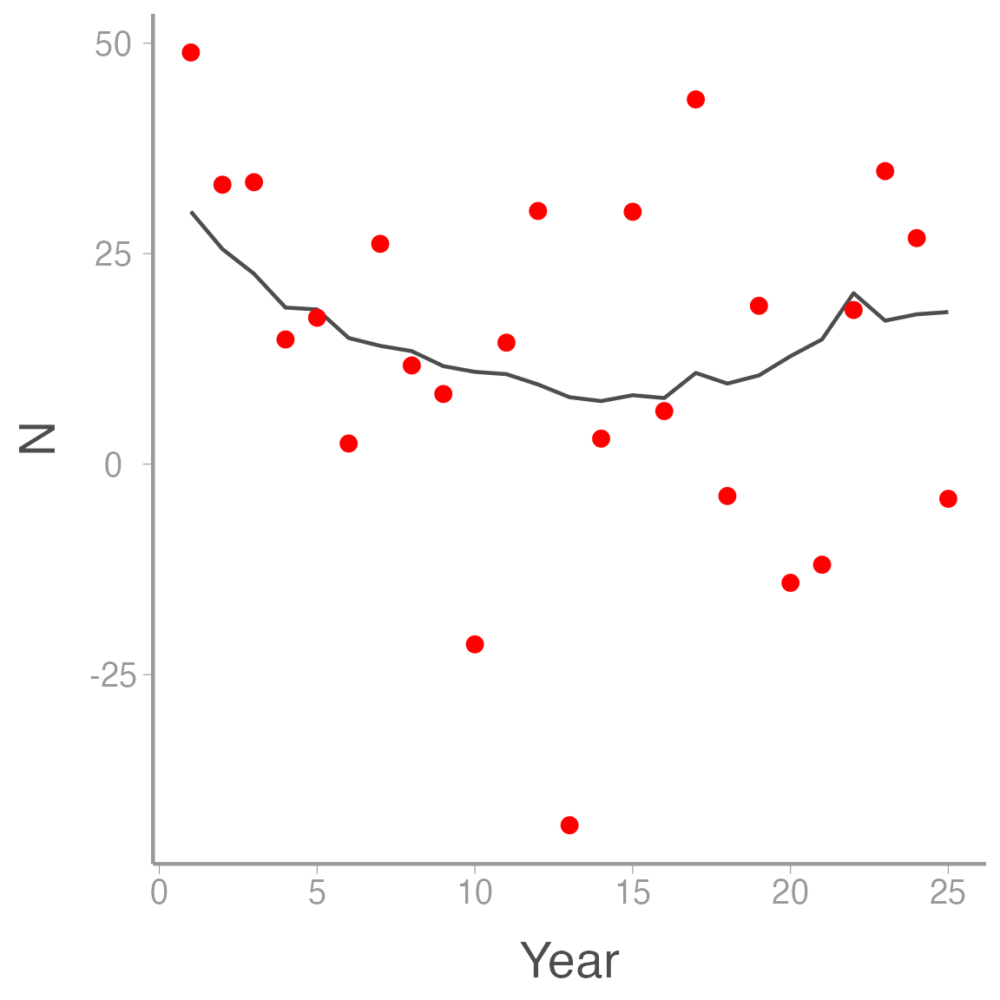
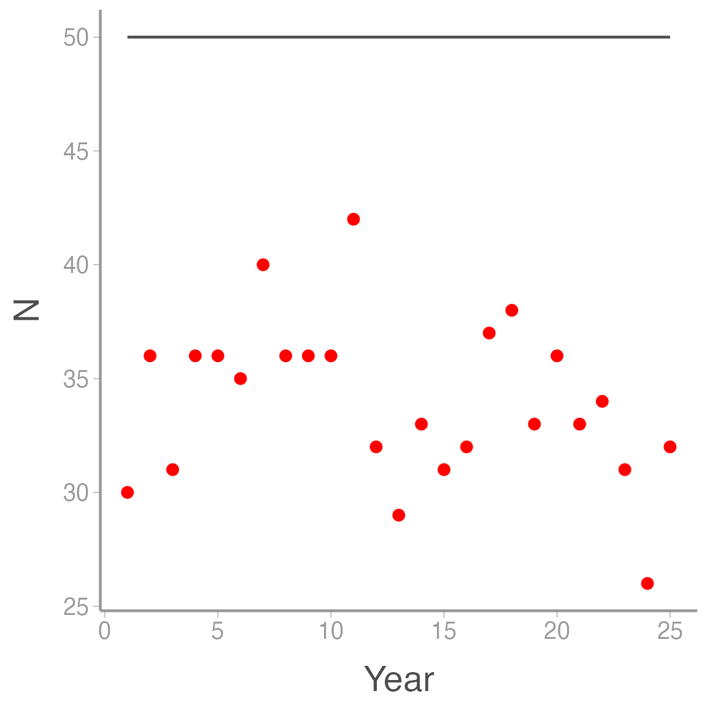
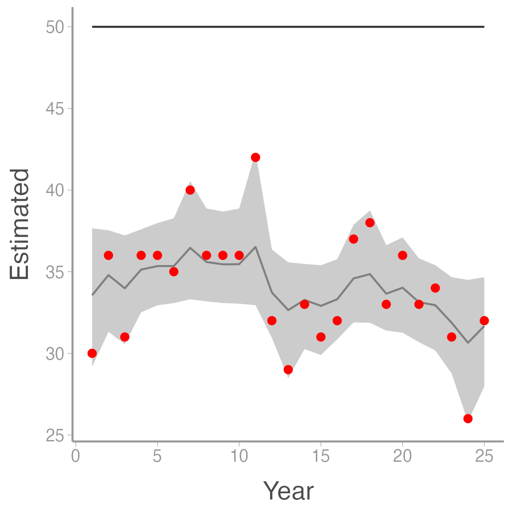
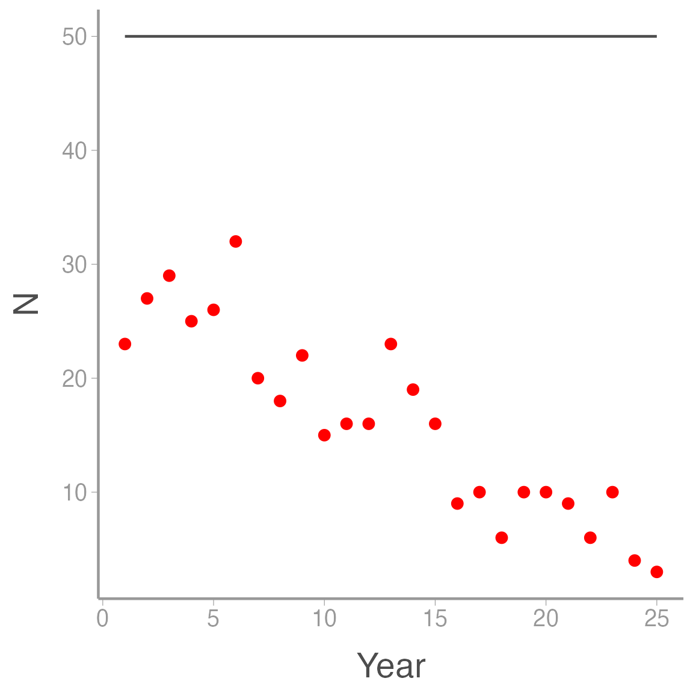
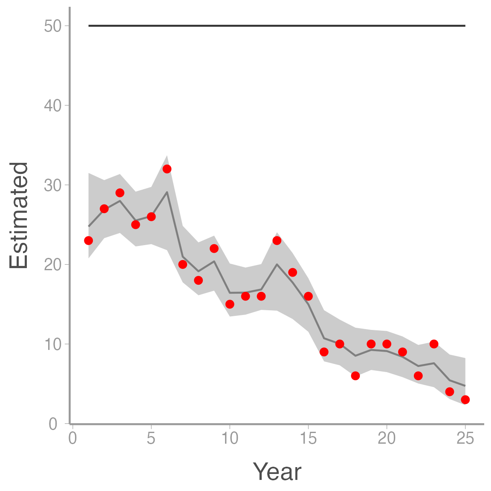
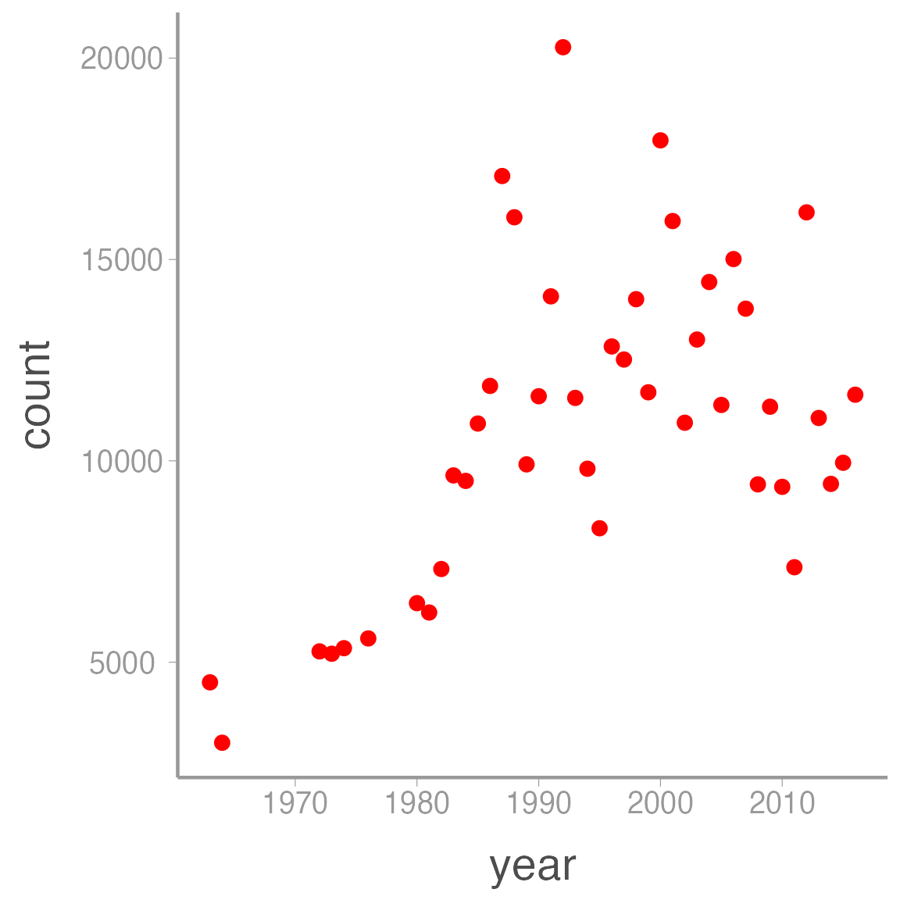
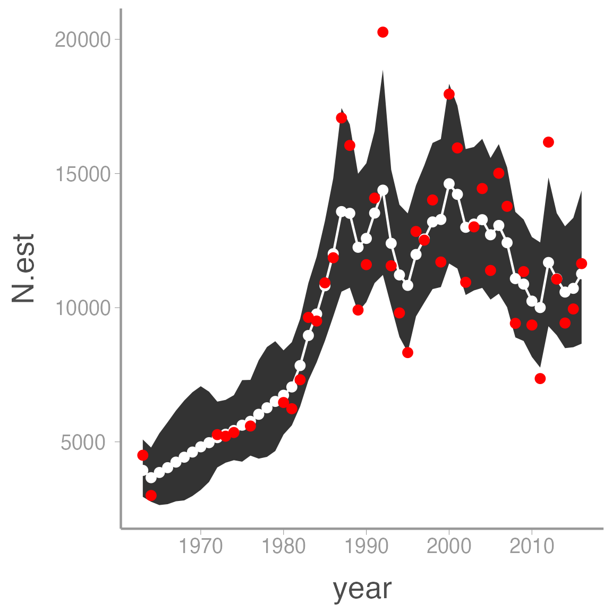
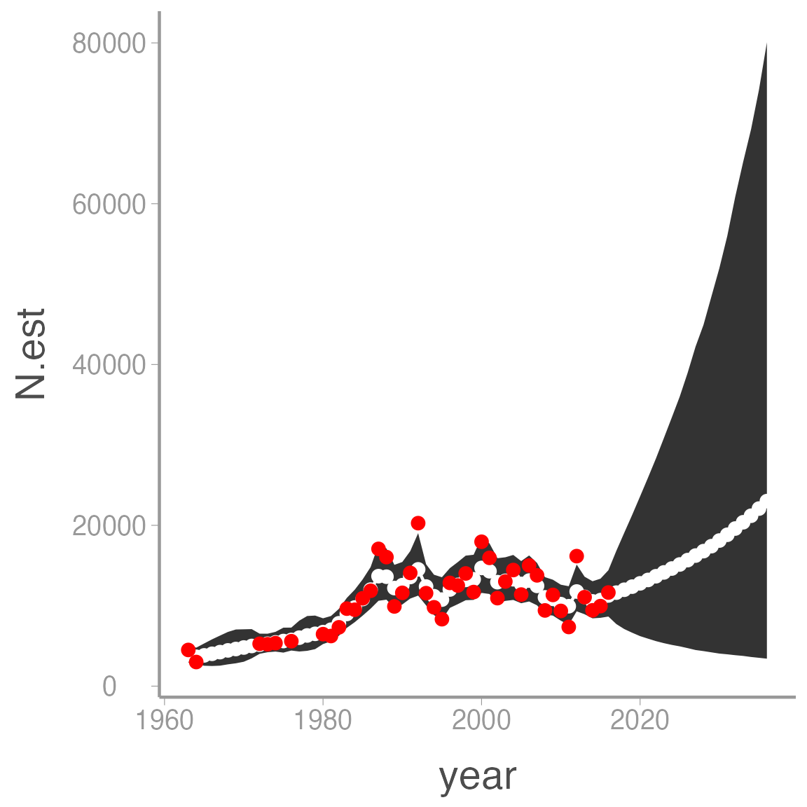

Fitting state-space abundance models in JAGS
WILD6900
2019-03-02
state_space.RmdAs we learned in lecture, state-space models provide a flexible framework for decomposing time series data into process variation and observation error. In this lab, we will use JAGS to fit a variety of state-space models using both simulated and real data.
Objectives
Simulate data sets with separate process and observation models
Fit state-space models to count data
Understand when and why state-space models produce biased estimates of abundance
Fitting state-space models to simulated data
We will start this lab with a relatively simple state-space abundance model. One of the most basic population growth models is:
\[\Large N_{t+1} = N_t \times \lambda_t \tag{1}\]
where \(\lambda_t\) is the change in population size from year \(t\) to year \(t+1\). Values of \(\lambda_t > 1\) result in positive population growth whereas values of \(\lambda_t < 1\) result in negative population growth (you can see this by recognizing that \(\lambda_t = \frac{N_{t+1}}{N_t}\)).
We will also assume that counts of population size are equally likely to overestimate (false positives) as they are to underestimate (false negative) the true abundance. Therefore, we will model the observed counts as:
\[\Large y_t \sim normal(N_t, \tau_{Obs}) \tag{2}\]
Our primary objective is to estimate both the annual \(\lambda_t\) values as well as the overall mean population growth rate \(\mu_{\lambda}\). As you will see, one benefit of the state-space model is that we can also obtain posterior distributions for the partially-observed \(N_t\) values.
The state-space model we just outlined is a hierarchical model \(-\) \(N_t\) shows up on both the LHS of equation 1 and the RHS of equation 2. We will add a second level of hierarchy by treating the annual growth rates as random effects:
\[\Large \lambda_t \sim normal(\mu_{\lambda}, \tau_{\lambda})\]
As you will see, this will result in some smoothing of the process model (the \(N_t\)) relative to the raw counts because the \(\lambda_t\) values (and therefore the \(N_t\)) associated extremely high or low counts will be “shrunk” towards \(\mu_{\lambda}\). This formulation also has the benefit of treating the mean growth rate as a parameter in the model, allowing us to easily obtain estimates of this important parameter.
So far, we have identified a number of parameters in the model, each of which requires a posterior distribution:
\(\Large \lambda_t \sim normal(\mu_{\lambda}, \tau_{\lambda})\)
\(\Large \mu_{\lambda} \sim normal(0, 0.1)\)
\(\Large \sigma_{\lambda} \sim gamma(0.25, 0.25) \bigg(note:\tau_{\lambda}=\frac{1}{\sigma^2_{\lambda}}\bigg)\)
\(\Large \sigma_{Obs} \sim gamma(0.25, 0.25) \bigg(note:\tau_{Obs}=\frac{1}{\sigma^2_{Obs}}\bigg)\)
Although it may not be obvious, there is one additional parameter in the model that requires a prior. Note that for years 2:T, \(N_t\) is a deterministic function of the previous year’s abundance and \(\lambda_t\). However, \(N_1\) has no predecessor. As a result, we need to treat it as a random variable and give it a prior:
- \(\Large N_1 \sim uniform(0, 500)\)
With the likelihoods and priors defined, we can now write the model file for JAGS:
sink("inst/jags/ssm.jags")
cat("
model {
# Priors and constraints
N.est[1] ~ dunif(0, 500) # Initial population size
for (t in 1:(nYears-1)){
lambda[t] ~ dnorm(mu.lambda, tau.lambda)
}
mu.lambda ~ dnorm(0, 0.1) # Mean growth rate
sigma.lambda ~ dgamma(0.25, 0.25) # SD of state process
tau.lambda <- pow(sigma.lambda, -2)
sigma.obs ~ dgamma(0.25, 0.25) # SD of observation process
tau.obs <- pow(sigma.obs, -2)
# Likelihood
# State process
for (t in 1:(nYears-1)){
N.est[t+1] <- N.est[t] * lambda[t]
}
# Observation process
for (t in 1:nYears) {
y[t] ~ dnorm(N.est[t], tau.obs)
}
}
", fill = TRUE)
sink()Be sure you go through this file and understand how each part of the code corresponds to the likelihoods and priors defined above.
Simulating the data
Next we will simulate 25 years of abundances and counts from the model defined above. For the simulation, we will assume an initial abundance of 30 individuals, \(\mu_{\lambda} = 1.02\), \(\sigma_{\lambda} = 0.15\), and \(\sigma_{Obs} = 4.5\):
nYears <- 25 # Number of years
N1 <- 30 # Initial population size
mu.lambda <- 1.02 # Mean annual population growth rate
sigma.lambda <- 0.15 # Process (temporal) variation of the growth rate
sigma.obs <- 20 # SD of the observation errorNext, we create an empty data frame to store the true abundances and the observed counts and we generate random values of \(\lambda_t\):
## Empty vectors to store the data
ssm_sim1 <- data.frame(Year = 1:nYears,
y = numeric(nYears),
N = numeric(nYears))
## Fill in initial abundance
ssm_sim1$N[1] <- N1
## Randomly generate annual lambda values
lambda <- rnorm(nYears-1, mu.lambda, sigma.lambda)Finally, we use loops to generate the true abundances and counts. Note that, once we have \(N_1\) and \(\lambda_t\), the \(N_t\) values are not stochastic. This should hopefully make it clear why we need a prior for \(N_1\) but not \(N_2,...,N_T\):
## Loop over years 1:nYears - 1 to generate true abundance
for (t in 1:(nYears-1)){
ssm_sim1$N[t+1] <- ssm_sim1$N[t] * lambda[t]
}
## Loop over all years to generate counts
for (t in 1:nYears){
ssm_sim1$y[t] <- rnorm(1, ssm_sim1$N[t], sigma.obs)
}
ggplot(ssm_sim1, aes(x = Year)) +
geom_line(aes(y = N), color = "grey30") +
geom_point(aes(y = y), color = "red")
Notice how much more variable the counts are compared to the true abundances. That additional variation is caused solely by observation error and if we ignored the distinction between process and observation error, we would greatly overestimate the process variance in our system.
Analysis in JAGS
Now we’re ready to fit the model in JAGS. First bundle the data:
## Bundle data
jags.data <- list(y = ssm_sim1$y, nYears = nYears)Next, set initial values. Remember that we need to set initial values for \(N_1\) but not the remainder of the \(N\)’s. So we will randomly generate an initial value for N[1] and then fill in NA for all other other elements in the N vector:
# Initial values
inits <- function(){list(sigma.lambda = runif(1, 0, 5),
mu.lambda = runif(1, 0.1, 2),
sigma.obs = runif(1, 0, 10),
N.est = c(runif(1, 20, 40), rep(NA, (nYears-1))))} Finally, set the parameters to monitor and the MCMC settings:
# Parameters monitored
parameters <- c("lambda", "mu.lambda", "sigma.obs", "sigma.lambda", "N.est")
# MCMC settings
ni <- 25000
nt <- 3
nb <- 10000
nc <- 3
# Call WinBUGS from R (BRT <1 min)
ssm <- jagsUI::jags(data = jags.data, inits = inits, parameters.to.save = parameters,
model.file = "jags/ssm.jags", n.chains = nc, n.thin = nt,
n.iter = ni, n.burnin = nb)
print(ssm)Now add the estimated \(N\) values (plus uncertainty) to the original data frame and visualize the results:
ssm_sim1 <- dplyr::mutate(ssm_sim1,
Estimated = ssm$mean$N.est,
LCI = ssm$q2.5$N.est,
UCI = ssm$q97.5$N.est)
ggplot(ssm_sim1, aes(x = Year)) +
geom_ribbon(aes(ymin = LCI, ymax = UCI), fill = "grey80") +
geom_line(aes(y = Estimated), color = "grey50") +
geom_line(aes(y = N), color = "grey20") +
geom_point(aes(y = y), color = "red")
Notice how much smoother the estimates of \(N\) (light grey line) are relative to the raw counts, a good indication that the model was able to seperate the observation error from the process variation.
Unbiased indices of \(N\)
The state-space model described above assumes that, on average, false positive counts cancel out false negative counts. What happens when that’s not the case? Let’s now simulate data assuming:
\[\Large y_t \sim binomial(N_t, p)\]
where \(p\) is the probability that an individual in the population is counted. In this case, \(y_t < N_t\). We will simulate these data assuming \(N_t=50\) in all years:
ssm_sim2 <- data.frame(Year = 1:nYears,
N = rep(50, nYears),
y = numeric(nYears))
p <- 0.7
for(t in 1:nYears){
ssm_sim2$y[t] <- rbinom(1, ssm_sim2$N[t], p)
}
ggplot(ssm_sim2, aes(x = Year)) +
geom_line(aes(y = N), color = "grey30") +
geom_point(aes(y = y), color = "red")
In this case. all of the variation in the counts is observation error \(-\) the true counts are constant.
Prepare the data for JAGS, create initial values, and then fit the model:
# Bundle data
jags.data <- list(y = ssm_sim2$y, nYears = nYears)
# Initial values
inits <- function(){list(sigma.lambda = runif(1, 0, 5),
mu.lambda = runif(1, 0.1, 2),
sigma.obs = runif(1, 0, 10),
N.est = c(runif(1, 30, 60), rep(NA, (nYears-1))))}
# Parameters monitored
parameters <- c("lambda", "mu.lambda", "sigma.obs", "sigma.lambda", "N.est")
# MCMC settings
ni <- 25000
nt <- 3
nb <- 10000
nc <- 3
# Call WinBUGS from R (BRT <1 min)
ssm2 <- jagsUI::jags(jags.data, inits,
parameters, "jags/ssm.jags",
n.chains = nc, n.thin = nt, n.iter = ni,
n.burnin = nb)
print(ssm2)Plot the results:
ssm_sim2 <- dplyr::mutate(ssm_sim2, Estimated = ssm2$mean$N.est,
LCI = ssm2$q2.5$N.est,
UCI = ssm2$q97.5$N.est)
ggplot(ssm_sim2, aes(x = Year)) +
geom_ribbon(aes(ymin = LCI, ymax = UCI), fill = "grey80") +
geom_line(aes(y = Estimated), color = "grey50") +
geom_line(aes(y = N), color = "grey20") +
geom_point(aes(y = y), color = "red")
Notice that \(N \times p = 50 \times 0.7 = 35\), which is about the average of the model estimates. Thus, in this case, the model does not provide unbiased estimates of \(N\) but it does provide unbiased estimates of \(Np\). Although the model still estimates some process variance (it thinks \(\sigma_{\lambda}>0\)), we would correctly conclude from this analysis that the population is stable, so an index in this case isn’t completely useless.
Systematic bias in the state-space model
Finally, let’s revise the above observation model assuming that there is a trend in detection probability. Perhaps due to the observed stability of the population, observers now spend less time looking for individuals they did at the beginning of the study. Thus:
\[\Large y_t \sim binomial(N_t, p_t)\]
\[\Large logit(p_{t}) = \alpha + \beta \times year_t\]
where \(\alpha\) and \(\beta\) are the intercept and slope coefficients that describe annual variation in \(p\). Again, we’ll assume that \(y_t < N_t\) and \(N_t=50\) in all years:
ssm_sim3 <- data.frame(Year = 1:nYears,
N = rep(50, nYears),
y = numeric(nYears))
# Decreasing trend of logit(p)
lp <- 0.5 - 0.1*(1:nYears)
# Transform lp to probability scale
p <- plogis(lp)
for(t in 1:nYears){
ssm_sim3$y[t] <- rbinom(1, ssm_sim3$N[t], p[t])
}
ggplot(ssm_sim3, aes(x = Year)) +
geom_line(aes(y = N), color = "grey30") +
geom_point(aes(y = y), color = "red")
Prepare the data for JAGS, create initial values, and then fit the model:
# Bundle data
jags.data <- list(y = ssm_sim3$y, nYears = nYears)
# Initial values
inits <- function(){list(sigma.lambda = runif(1, 0, 5),
mu.lambda = runif(1, 0.1, 2),
sigma.obs = runif(1, 0, 10),
N.est = c(runif(1, 30, 60), rep(NA, (nYears-1))))}
# Parameters monitored
parameters <- c("lambda", "mu.lambda", "sigma.obs", "sigma.lambda", "N.est")
# MCMC settings
ni <- 25000
nt <- 3
nb <- 10000
nc <- 3
# Call WinBUGS from R (BRT <1 min)
ssm3 <- jagsUI::jags(jags.data, inits,
parameters, "jags/ssm.jags",
n.chains = nc, n.thin = nt, n.iter = ni,
n.burnin = nb)
print(ssm3)Plot the results:
ssm_sim3 <- dplyr::mutate(ssm_sim3, Estimated = ssm3$mean$N.est,
LCI = ssm3$q2.5$N.est,
UCI = ssm3$q97.5$N.est)
ggplot(ssm_sim3, aes(x = Year)) +
geom_ribbon(aes(ymin = LCI, ymax = UCI), fill = "grey80") +
geom_line(aes(y = Estimated), color = "grey50") +
geom_line(aes(y = N), color = "grey20") +
geom_point(aes(y = y), color = "red")
As you can see, in this case the model thinks that abundance is decreasing when in fact it is \(p\) that is changing. This example shows one of the weaknesses of state-space models \(-\) without additional information, the model cannot fully distinguish between changes in the process model vs. changes in the observation process (we saw this above when the model assumed some of the noise in the counts was assumed to be process variation even though \(\sigma_{\lambda}=0\)). Nonetheless, state-space models provide an intuitive way to model time series data that is subject to observation error when the assumptions of the model are met.
Estimating population dynamics of the Gunnison Island pelican colony
Next, we will use a slightly different state-space model to analyze growth of a nesting colony of American white pelicans (Pelecanus erythrorhynchos) on Gunnison Island in the Great Salt Lake. White pelicans are one of the largest birds in North America and Gunnison Island hosts one of the largest inland colonies in the Pacific flyway. Gunnison Island is a remote spit of land in the northwest part of the lake. Despite being surrounded by hyper-saline water, the island is a good place for nesting pelicans because it provides a haven from predators. The size of this colony is of regional importance both ecologically (as a source for smaller colonies) and due to collision risk with airplanes at the Salt Lake airport.

American White Pelican. Image courtesy of Frank Schulenburg via WikiCommons
Colony counts have been conducted almost annual since the early 1960’s, with brief gaps in the late ’60s and again in the late ’70s. These counts indicate that the colony grew considerably in the ’70s and ’80s but has since leveled off near its carrying capacity.
data("pelicans")
head(pelicans)
ggplot(pelicans, aes(x = year, y = count)) +
geom_point(color = "red")| year | count |
|---|---|
| 1963 | 4500 |
| 1964 | 3000 |
| 1965 | NA |
| 1966 | NA |
| 1967 | NA |
| 1968 | NA |

Our goal is to estimate the average rate of population growth from these data. To do so, we will slightly modify the model used above by recognizing that:
\[\Large log(\lambda_t) = r_t\]
and therefore:
\[\Large log(N_{t+1}) = log(N_t) + r_t\]
Working on the log scale often helps with parameter estimation and as we will see in the next lab, this formulation makes it easy to expand this model to include density dependence. Aside from this change, the pelican model is very similar to the model we analyzed above:
sink("jags/AWPE_ssm.jags")
cat("
model{
# Priors
logN.est[1] ~ dnorm(0, 0.01) # Log initial population size
for (t in 1:(nYears - 1)){
r[t] ~ dnorm(mean.r, tau.r)
}
mean.r ~ dnorm(1, 0.001) # Mean growth rate
sigma.r ~ dunif(0, 10) # SD of state processes
tau.r <- pow(sigma.r, -2)
sigma.obs ~ dunif(0, 10) # SD of observation processes
tau.obs <- pow(sigma.obs, -2)
# Likelihood
# State process
for (t in 1:(nYears-1)){
logN.est[t+1] <- logN.est[t] + r[t]
}
# Observation process
for (t in 1:nYears){
y[t] ~ dnorm(logN.est[t], tau.obs)
}
# Population sizes on real scale
for (t in 1:nYears){
N.est[t] <- exp(logN.est[t])
}
}
", fill = TRUE)
sink()Again, be sure you understand how this model code translates into the model description above.
Next, we’ll bundle the data. Remember that because we are modeling \(log(N_t)\), we need to enter our counts as \(log(y_t)\):
Note that JAGS can not only handle the NA counts, it will still estimate \(N_t\) in those years. This is a major benefit of modeling parameters as random variables \(-\) by providing a process model and a probability distribution for each \(N_t\), the model will estimate a posterior distribution for each annual abundance even if we don’t provide any data!
Next, create the initial values function and set the MCMC settings:
inits <- function(){list(sigma.r = runif(1, 0, 1),
mean.r = runif(1),
sigma.obs = runif(1, 0, 1),
logN.est = c(runif(1, 0, 10), rep(NA, (nrow(pelicans)-1))))}
params <- c("mean.r", "sigma.obs", "sigma.r", "N.est", "r")
ni <- 30000
nt <- 1
nb <- 5000
nc <- 3Finally, fit the model. Note that we will now set parallel = TRUE in the jags function to speed up model fitting. Unfortunately, this means we won’t get a progress bar:
awpe_ssm <- jagsUI::jags(data = jags.data,
model.file = "jags/AWPE_ssm.jags",
parameters.to.save = params,
inits = inits,
n.chains = nc,
n.iter = ni,
n.thin = nt,
n.burnin = nb, parallel = TRUE)
print(awpe_ssm)Now plot the estimated abundance vs. the counts:
pelicans <- dplyr::mutate(pelicans,
N.est = awpe_ssm$mean$N.est,
LCI = awpe_ssm$q2.5$N.est,
UCI = awpe_ssm$q97.5$N.est)
ggplot(pelicans, aes(x = year)) +
geom_ribbon(aes(ymin = LCI, ymax = UCI)) +
geom_line(aes(y = N.est), color = "white") +
geom_point(aes(y = N.est), color = "white") +
geom_point(aes(y = count), color = "red")
As for the simulated data, notice how the estimated abundances are “smoothed” relative to the observed counts.
Also note that the model returns estimates of \(N_t\) even in the years with no counts. This is a powerful advantage of Bayesian methods. For example, what if we want to project counts into the future? All we have to do is add NA counts to the data frame and adjust the number of years and we get these predictions (and associated uncertainty) for free:
## Bundle data with additional years
jags.data <- list(y = c(log(pelicans$count), rep(NA, 20)),
nYears = nrow(pelicans) + 20)
inits <- function(){list(sigma.r = runif(1, 0, 1),
mean.r = runif(1),
sigma.obs = runif(1, 0, 1),
logN.est = c(runif(1, 0, 10), rep(NA, (nrow(pelicans)-1 + 20))))}
awpe_ssm2 <- jagsUI::jags(data = jags.data,
model.file = "jags/AWPE_ssm.jags",
parameters.to.save = params,
inits = inits,
n.chains = nc,
n.iter = ni,
n.thin = nt,
n.burnin = nb, parallel = TRUE)pelicans2 <- data.frame(year = c(pelicans$year,
seq(from = max(pelicans$year) + 1,
to = max(pelicans$year) + 20)),
count = c(pelicans$count, rep(NA, 20)),
N.est = awpe_ssm2$mean$N.est,
LCI = awpe_ssm2$q2.5$N.est,
UCI = awpe_ssm2$q97.5$N.est)
ggplot(pelicans2, aes(x = year)) +
geom_ribbon(aes(ymin = LCI, ymax = UCI)) +
geom_line(aes(y = N.est), color = "white") +
geom_point(aes(y = N.est), color = "white") +
geom_point(aes(y = count), color = "red")
Expanding the state-space model
The simple process model used throughout this lab is a good starting point for modeling population dynamics. However, this model is quite limiting. For example, it appears the growth of the pelican colony did not show random variation around a mean for the entire study period. Rather, it experienced several decades of rapid growth followed by fluctuations around an apparent carrying capacity. Likewise, the model above ignores vital rates (survival and reproduction) or age structure. In the next lab, we will explore how use the flexibility of this approach to develop more complex (and realistic) models of population growth.